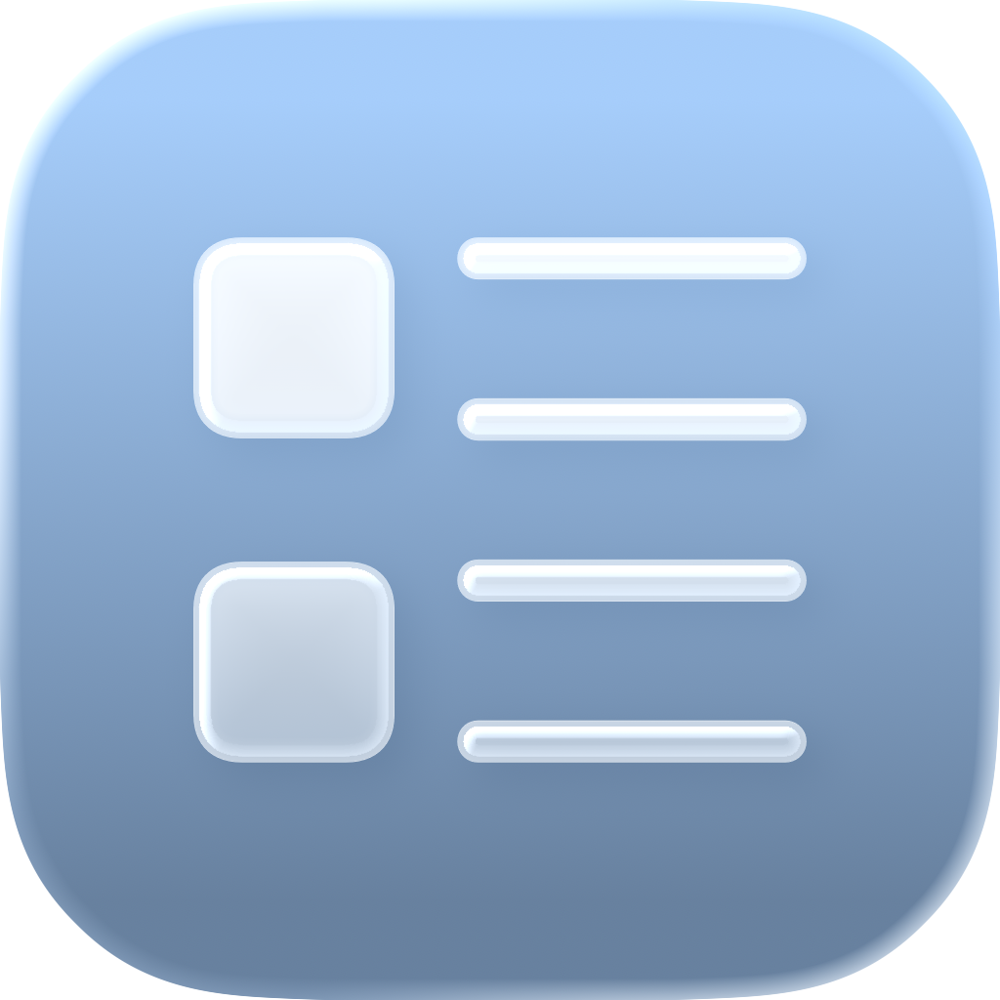
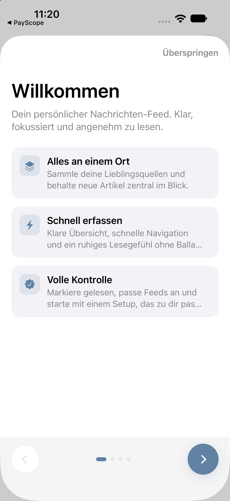
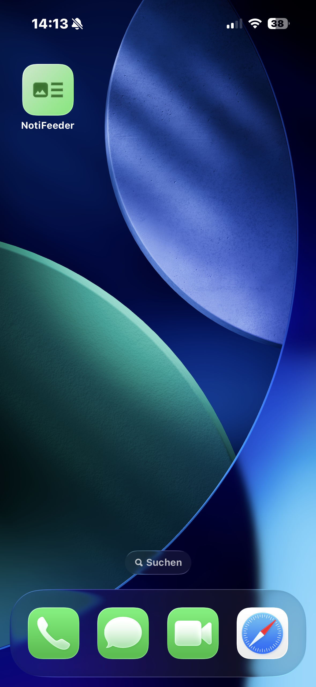

One story, ready.
A direct route into the newest article from a chosen feed or filter.

NewsFeeder PortfolioYour feed, without the noise
Follow the publications you choose, keep articles ready offline, and return to what matters without an algorithm deciding for you.

Start
The current onboarding explains the reading model first, then guides you to the sources you actually want. No account wall and no algorithmic setup.

Curate
Add RSS and Atom feeds, give them a color, and bring every publication into one chronological stream. NewsFeeder remembers what you have read without reshaping the feed around engagement.


Read
Open an article in a dedicated reader with adjustable typography, reading time and progress. Bookmark it for later, share it, or continue on the original website.
Find
Search article titles, content and authors. Narrow the stream to unread stories, bookmarks or today's updates and switch between compact and spacious card styles.

Understand
On supported devices, Apple Foundation Models can create a concise summary without sending the article to a custom AI backend. Use it as orientation, then return to the full story.
The original article remains the source. The summary is a fast way back into the subject, not a replacement for reading it.
Private by design
NewsFeeder keeps a local article cache for offline reading, builds no advertising profile and needs no custom account backend. Optional iCloud sync uses Apple's CloudKit to keep app data available across your devices.
Technology
A native SwiftUI interface with a dedicated article reader, persistent local data, deep links and widgets that share the same feed state.
NewsFeeder for iPhone